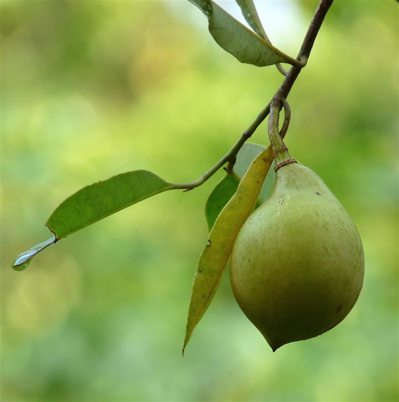
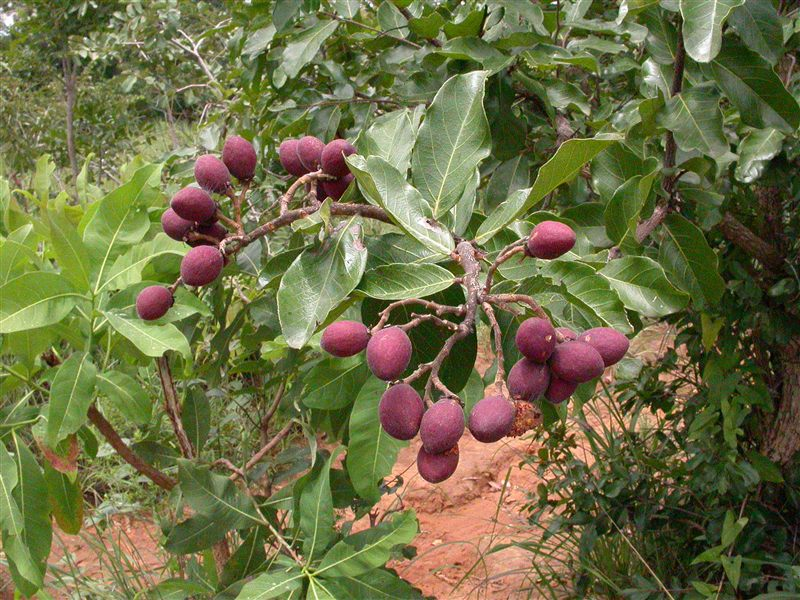
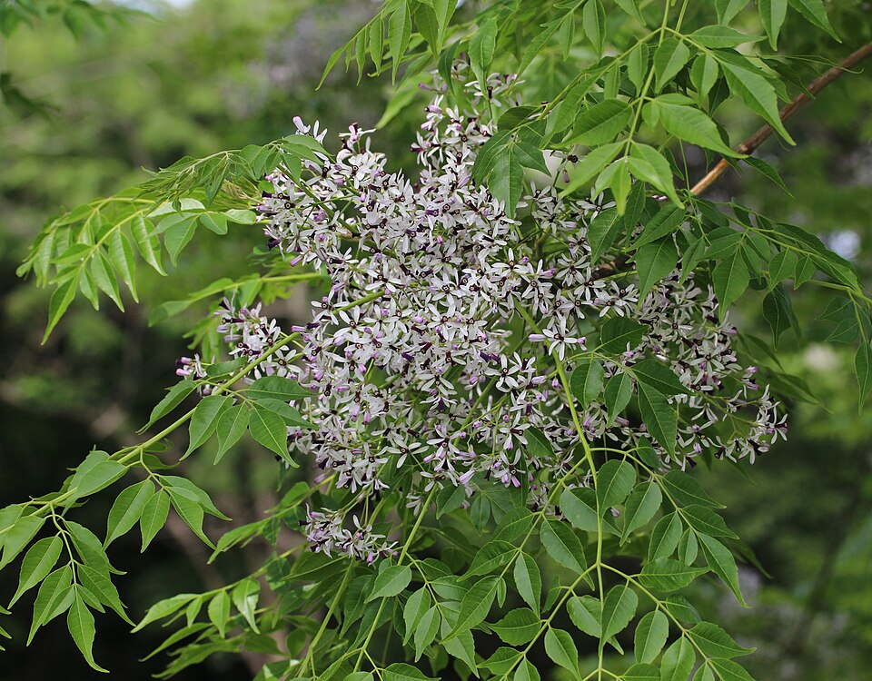
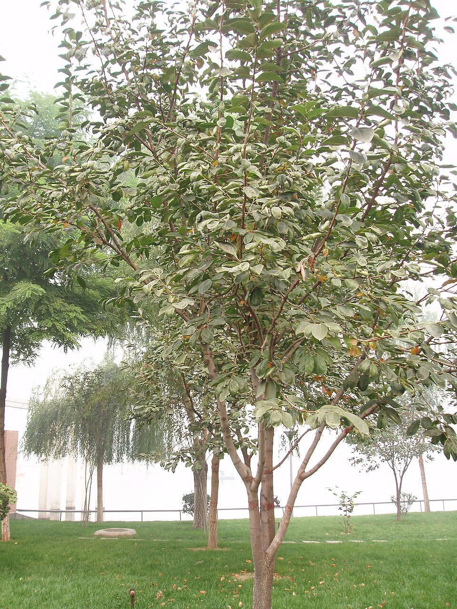

Forest Story documents four flowering plant families in a simple three-level hierarchy: each family contains two genera, and each genus contains two species. Browse the families below, use the search to jump straight to any genus or species, or scan the full hierarchy in the overview table.
Jump to a family, genus or species
Families
Species
Meet the families
Each family below is a doorway into its two genera and four species. Click a photo to see the full family profile.

MyristicaceaeThe Nutmeg FamilyNative to tropical Asia — Himalaya to Malesia
ChrysobalanaceaeThe Cocoplum FamilyNative to Southeast Asia & tropical Americas
MeliaceaeThe Mahogany FamilyNative to Asia-Pacific — South Asia to N. Australia
EbenaceaeThe Ebony FamilyNative to Asia-Pacific & AfricaMore ways to help
Identification
Not sure what you're looking at? Upload a photo and get help identifying it.
Identify a Plant →Contribution
Seen a plant we haven't documented yet? Share your own observations with the collection.
Contribute Your Findings →Collection overview
| Family | Genus | Species |
|---|---|---|
| Myristicaceae | Horsfieldia | Horsfieldia flocculosa, H. kingii |
| Knema | Knema cinerea, K. sumatrana | |
| Chrysobalanaceae | Parastemon | Parastemon urophyllus, P. grandifructus |
| Hirtella | Hirtella triandra, H. racemosa | |
| Meliaceae | Aglaia | Aglaia elliptica, A. korthalsii |
| Dysoxylum | Dysoxylum acutangulum, D. grande | |
| Ebenaceae | Diospyros | Diospyros ferrea, D. ebenum |
| Euclea | Euclea natalensis, E. racemosa |